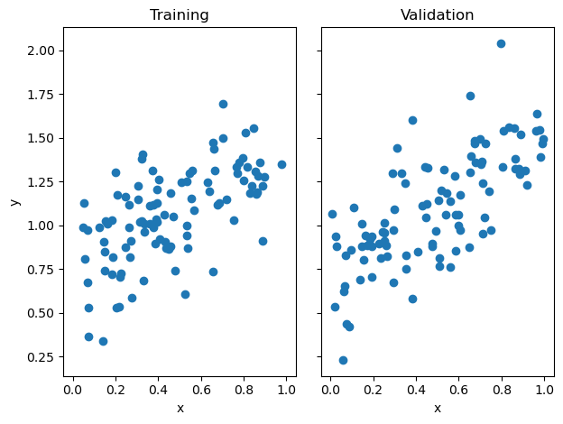

%load_ext autoreload
%autoreload 2The autoreload extension is already loaded. To reload it, use:
%reload_ext autoreloadJulia Fairbank
March 27, 2023
The autoreload extension is already loaded. To reload it, use:
%reload_ext autoreloadhttps://github.com/juliafairbank7/juliafairbank7.github.io/blob/main/posts/Linear%20Regression/LinearRegression.py
With data that has a linear relationship between two variables, linear regression allows you to find the best line that fits that relationship. The Least Squares Regression Line is the line that minimizes the variance (you can think about it like vertical height) between the data points to the regression line. This best line of fit minimizes the (It’s called a “least squares” because the variance represents the sum of squares of the errors).
Least-squares linear regression is a convex linear model that makes predictions of the form \(\tilde{y}_i = \langle w, {x}_{i} \rangle\).
The loss function that we will be using is \(l(\tilde{y}, y) = (\tilde{y} - y)^{2}\), which says that the loss is equal to the squared error (least squares!)
Our empirical loss minimization function is
$ = $ arg min \(L(w)\)
There are multiple ways to solve this empirical loss minimization function, and we will be focusing on two of them: analytically and using gradient descent.
So, we will be implementing least-squares linear regression in these two different ways: 1. Analytical Fit 2. Gradient Descent Fit
For the analytical implementation of least-squares linear regression, we can use an explicit formula that uses matrix inversion. This formula, \(\hat{w} = {X}^{T}{X}^{-1}X^{T}y\), will calculate our optimal weight vector.
For the gradient descent implementation of least-squares linear regression, we will need to compute the gradient with respect to \(\hat{w}\) and repeat until convergence. To do this without killing our computer by over-computing, we can calculate \(P = {X}^{T}{X}\) and \(q = {X}^{T}y\) just once. From there, our gradient is \(2(Pw-q)\).
By calculating our gradient this way, we are eliminating the chance for the run-time to shoot up depending on the number of data points.
import numpy as np
from matplotlib import pyplot as plt
from LinearRegression import LinearRegression
def pad(X):
return np.append(X, np.ones((X.shape[0], 1)), 1)
def LR_data(n_train = 100, n_val = 100, p_features = 1, noise = .1, w = None):
if w is None:
w = np.random.rand(p_features + 1) + .2
X_train = np.random.rand(n_train, p_features)
y_train = pad(X_train)@w + noise*np.random.randn(n_train)
X_val = np.random.rand(n_val, p_features)
y_val = pad(X_val)@w + noise*np.random.randn(n_val)
return X_train, y_train, X_val, y_valn_train = 100
n_val = 100
p_features = 1
noise = 0.2
# create some data
X_train, y_train, X_val, y_val = LR_data(n_train, n_val, p_features, noise)
# plot it
fig, axarr = plt.subplots(1, 2, sharex = True, sharey = True)
axarr[0].scatter(X_train, y_train)
axarr[1].scatter(X_val, y_val)
labs = axarr[0].set(title = "Training", xlabel = "x", ylabel = "y")
labs = axarr[1].set(title = "Validation", xlabel = "x")
plt.tight_layout()
# plot line
fig, axarr = plt.subplots(1, 2, sharex = True, sharey = True)
axarr[0].scatter(X_train, y_train)
axarr[0].plot(X_train, LR_analytical.predict(X_train), color = "black")
axarr[1].scatter(X_val, y_val)
axarr[1].plot(X_val, LR_analytical.predict(X_val), color = "black")
labs = axarr[0].set(title = "Training", xlabel = "x", ylabel = "y")
labs = axarr[1].set(title = "Validation", xlabel = "x")
plt.tight_layout()print(f"Training score for Analytical Score = {LR_analytical.score(X_train, y_train).round(4)}")
print(f"Validation score for Analytical Score = {LR_analytical.score(X_val, y_val).round(4)}")Training score for Analytical Score = 0.371
Validation score for Analytical Score = 0.4883As you can seen through the graph above, the analytical fit has classified the least squares regression line through our data points. Now let’s see how our other method works.
# plot line
fig, axarr = plt.subplots(1, 2, sharex = True, sharey = True)
axarr[0].scatter(X_train, y_train)
axarr[0].plot(X_train, LR_gradient.predict(X_train), color = "black")
axarr[1].scatter(X_val, y_val)
axarr[1].plot(X_val, LR_gradient.predict(X_val), color = "black")
labs = axarr[0].set(title = "Training", xlabel = "x", ylabel = "y")
labs = axarr[1].set(title = "Validation", xlabel = "x")
plt.tight_layout()plt.plot(LR_gradient.score_history)
labels = plt.gca().set(title = "Score History for Gradient Descent Fit", xlabel = "Iteration", ylabel = "Score")Let’s see how our gradient descent score has changed over our iterations (epochs).
Now that we’ve seen how linear regression works on 1 feature and a bias term, let’s try to increase the number of features to 5.
def LR_a_features(n_train = 100, n_val = 100, p_features = 5, noise = .1, w = None):
if w is None:
w = np.random.rand(p_features + 1) + .2
X_train = np.random.rand(n_train, p_features)
y_train = pad(X_train)@w + noise*np.random.randn(n_train)
X_val = np.random.rand(n_val, p_features)
y_val = pad(X_val)@w + noise*np.random.randn(n_val)
return X_train, y_train, X_val, y_val
n_train = 1000
n_val = 100
noise = 0.2
feature_count = []
testing_scores = []
validation_scores = []
for i in range(n_val-1):
p_features = i
feature_count.append(i)
X_train, y_train, X_val, y_val = LR_data(n_train, n_val, p_features, noise)
LR_a_features = LinearRegression()
LR_a_features.fit_analytic(X_train, y_train)
testing_scores.append(LR_a_features.score(X_train, y_train).round(4))
validation_scores.append(LR_a_features.score(X_val, y_val).round(4))
plt.plot(testing_scores)
plt.plot(validation_scores)
labels = plt.gca().set(title = "Increasing Features on Analytic Fit", xlabel = "Features", ylabel = "Score")n_train = 250
n_val = 250
p_features = range(1, n_train)
noise = 0.2
train_scores = []
validation_scores = []
LR_g_features = LinearRegression()
for i in p_features:
X_train3, y_train3, X_val3, y_val3 = LR_data(n_train, n_val, i, noise)
LR_g_features.fit_gradient(X_train3, y_train3, 0.000009, 500)
train_scores.append(LR_g_features.score(X_train3, y_train3).round(4))
validation_scores.append(LR_g_features.score(X_val3, y_val3).round(4))
plt.plot(train_scores)
plt.plot(validation_scores)
labels = plt.gca().set(title = "Increasing Features on Gradient Descent Fit", xlabel = "Features", ylabel = "Score")